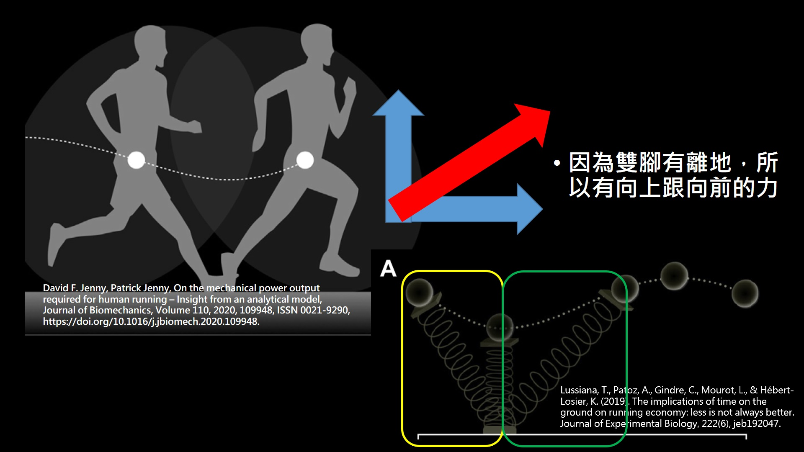
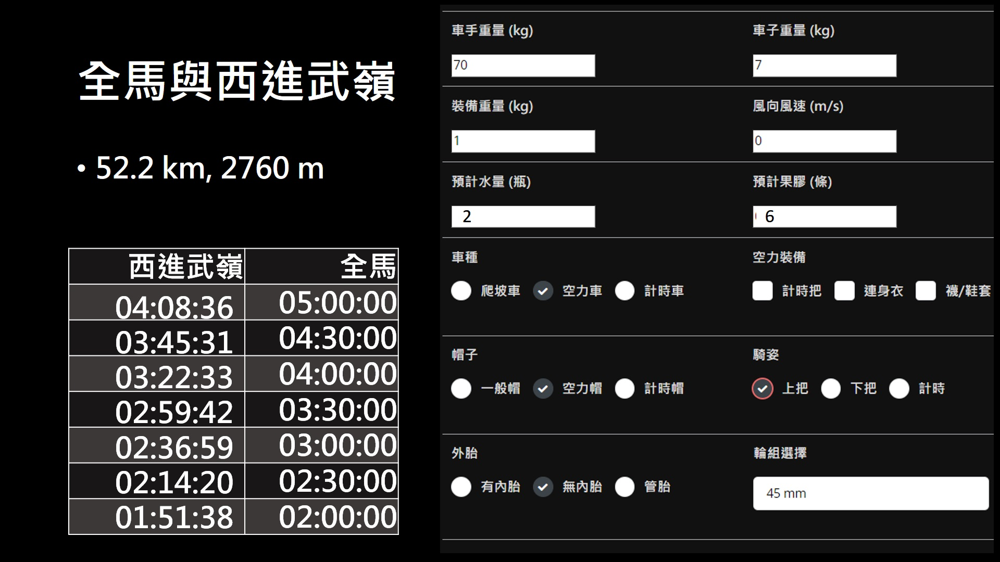
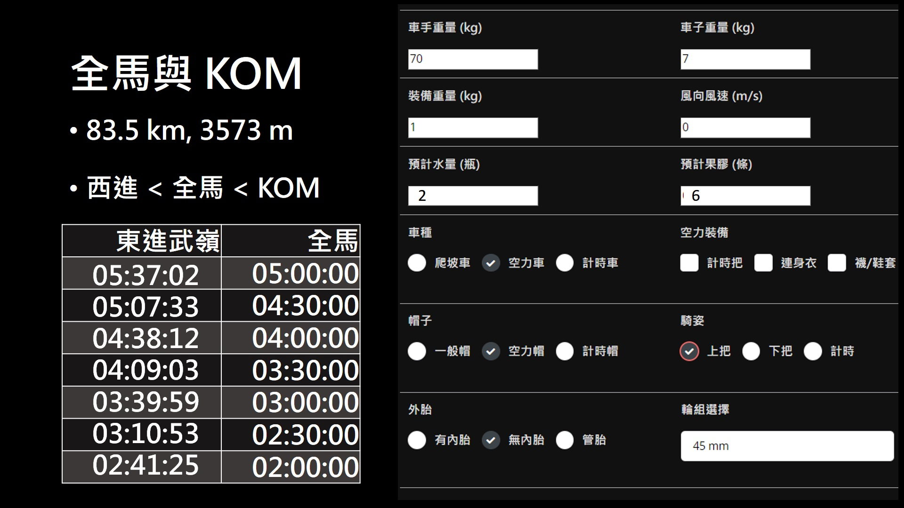

跑步功率如何估算 全馬破 2 功率要多少 跟武嶺和 40 km ITT 哪個比較難
雖然現在跑步功率計不像現在是直接量測力，但是還可以從一些物理量來去做估算，首先我們先來定義跑步的動作，跑步的動作是一隻腳會在地上，然後有一段時間會兩腳離地，而腳在觸地後有一半的時間是在受力，就是 IC 到 Tc 另外一半的時間是在施力，所以實際上有功率輸出的只有 Tc 到 TO，假設是步頻 180 的情況下 表示同一隻腳，從離地到落地 也就是一個 IC 週期需要花 2/3 秒。如果觸地時間跟滯空時間一半一半的話，那觸地時間大概只有 1/3 秒，而在假設觸地時只有一半在施力的話，那麼實際上在一個 IC 周期內，一隻腳施力的時間只有 1/6 秒，算出這個施力時間後我們就可以來計算力跟功率。

跑步的步頻習慣用每分鐘腳觸地的次數計算，但是自行車的踏頻則是一隻腳每分鐘繞圈的時間，所以跑步的步頻除二就是每隻腳每分鐘的觸地時間，換算下來的話步頻 180 就是一隻腳每分鐘觸地 90 次，如果是這樣計算的話 就會發現不論是自行車或是跑步，步頻跟踏頻都會推薦在 90 上下，這個之後再來作討論。自行車在踩踏時有超過一半的路徑都在施力，也就是我們把負的那邊當作沒在做功，另外就是因為曲柄的另一端會被帶動，所以當右腳沒在施力時，左腳會轉動曲柄，此時如果右腳沒有刻意拉提的話就會被左腳往上推，當然這個力相對於跑步落地的衝擊是非常的小，所以騎自行車沒有像跑步一樣那麼容易鐵腿。
自行車的施力方向與前進方向雖然不同，但是可以藉由一些簡單的機械來改變施力方向，而跑步就沒辦法，所以我們就先把跑步施力方向找出來。當然跑步有個速度往前，所以人有施一個向前的力，而跑步時身體一定會有跳動，只是多少問題而已，所以跑步還有一個向上的力，這樣合力方向就可以找出來，在這邊是朝右上，最後在因為這邊合力跟施力方向平行，所以兩個相乘後就可以把做功找出來，當然功率也就可以找的出來。

所以就根據作功和功率在物理上的定義，這邊需要將力算出來才能夠知道，而力這邊又有水平與鉛直方向，所以合力方向就是兩者平方和在開根號，最後把一些跑步的垂直振福和步長帶入，這邊參考幾年前非正規賽的破二數據，垂直振幅平均為 4 公分 平均步長為 1.74 公尺，時間就剛好用 2 小時做計算並將單位換成 m/s，最後根據這些數據算出來的瓦數，如果體重 + 跑鞋那些裝備有到 65 公斤的話，均瓦大概會介於 330~375 瓦之間，如果你有這些數據的話，我也可以幫你做線下估算，當然以長跑這種長時間的運動，對於一般人來說不是瓦數有多高，而是這麼高的瓦數能維持多久。
當然跑步與自行車這兩個運動力學上有非常大的不同，雖然世界級自行車選手在瓦數也是差不多，但是自行車平路要對抗的是風阻，重量的影響幾乎是微乎其微，而跑步不論在平路或爬坡都是要對抗重量，所以雖然兩者都幾乎是下半身的運動，但是跑者看起來腿會比自行車手還要細長，所以如果能有更多細部的資料，那個人覺得應該可以給出最佳的重量，目前網站 3.0 是針對自行車做表現預估，未來的網站 4.0 就會針對跑步做表現預估，也請大家敬請期待。
有些自行車手在冬天也會去參加馬拉松，像是目前退役車手 Dumoulin 最近參加半馬賽事，跑出了 70 分鐘的成績 在台灣幾乎是前幾名了，當然 Dumoulin 本身也拿過環義冠軍與環法總二，以及世界個人計時冠軍和兩屆奧運個人計時銀牌。另一位現役的自行車手 adam yates 則是在，全馬跑出了破三的成績 比很多專業跑者還快，當然我本身是從自行車轉跑步的，所以對於自行車的圈子比較熟，較少聽到跑步然後去騎自行車的。
那我們就可以來做計算啦，一樣用我的 2.0 計算機，然後參數設定就如右圖，當然自行車裝備影響很多，而跑步的碳板鞋也是會對成績有影響，所以這邊就先將裝備都設定好去做計算。然後我們先來看一下全馬跟西進武嶺成績的關係，當然也常常有人在問這兩個哪個比較難，先來看看全馬成績是 5 小時的跑者，大概就是有在練但沒有跑很多的人，習慣騎車後去騎武嶺的成績可以到四小時初，雖然自行車整體來說會多跑步 8 kg 左右，不過因為自行車公路的坡度通常不會太陡，不像跑步是要完全對抗重力。而如果是全馬 4.5 小時的人，騎武嶺的時間就可以進 4 小時內了，所以大概可以知道 對於前面的假設來說，西進武嶺是比全馬還要稍微簡單的。而如果全馬成績有四小時這算是有很常練的人，去騎武嶺的話時間可以進 3.5 小時內，而如果全馬成績有 3.5 小時那西進就可以破三了。當然也會看到兩者的時間差越來越小，是因為自行車的速度較快所以風阻較大，所以就有更多的瓦數在對抗風阻，最後如果你有 2 小時的實力 那西進也可以破 2。

然後來看看東進武嶺的路段跟全馬比，當然距離與爬升都更多了，騎程時間也會變長。算出來如果全馬 5 小時，那東進要 5.5 小時以上，全馬 4.5 小時的話東進還沒辦法破 5，還要再快一點才有辦法進 5 小時內，而全馬成績大概要 3.5 小時東進才能破 4。這邊兩者的時間差越來越大，是因為東進武嶺整體的平均坡度較緩但長度較長，所以均速會比西進來的快一點，風阻自然就高一點，這大概就是全馬與東進武嶺成績的關係。當然東進中間有一段不短的下坡考驗車手的技術，所以計算上的誤差會比西進還要高，那從時間上來看的話，我們用相同的標準比較，這三者的難度是 西進 < 全馬 < KOM。

最後來看一下半馬跟 40 公里個人計時的關係，這邊的個人計時假設是全平路沒爬升，我原本是想選跑 10 k 但感覺 10 k 有點短所以選半馬，然後這邊是選用空力車+連身衣+空力襪握下把，所以如果選計時車的話時間會在短一點。那麼來看一下半馬 96 分鐘騎自行車能多快，半馬 96 的成績幾乎是在地方賽事都可上台的成績，不過因為平路個人計時跟體重關係比較小，所以如果跑者體重輕那瓦數算出來就會更小，如果是以 70 kg 來做計算 那 40 k 大概要 1 小時，當然以這種裝備來說 1 小時也算滿快的，像世錦賽是 47.8 k 最快也才 55 分鐘左右。而如果是 40 k要進 55 分以內半馬大概要 80 分鐘左右，最後如果半馬跑 1 小時的話應該是可以低於 50 分鐘，所以這大概是半馬跟 40 k 平路 ITT 時間關係，當然都用最空力的裝備跟姿勢則可以在快 2~3 分鐘。所以以 Dumoulin 半馬成績來看，40 k 平路 ITT 時間大概就是在 50 分鐘以內，參考 2022 環法第 20 站的 ITT 距離是 40.7 km，單站冠軍 WVA 也是要騎將近 48 分鐘，所以如果真的兩邊都有練一段時間，那是可以透過兩者的瓦數去做時間換算的。

所以從計算假設與參數設定來看，對於一個跑步和自行車都有在練的人來說，難度大概是西進 < 全馬 < KOM，當然不同裝備與體重就會有不同的結果，有興趣的話可以自行去算算其他參數結果。
參考資料
The application of data analysis methods for surface electromyography in shot putting and sprinting, November 2017, DOI:10.13140/RG.2.2.15907.04640 , Thesis for: PhD, Advisor: Richard Conway, Drew Harrison
Ferrer-Roca, V., Rivero-Palomo, V., Ogueta-Alday, A., Rodríguez-Marroyo, J. A., & García-López, J. (2017). Acute effects of small changes in crank length on gross efficiency and pedalling technique during submaximal cycling. Journal of sports sciences, 35(14), 1328–1335. https://doi.org/10.1080/02640414.2016.1215490
David F. Jenny, Patrick Jenny, On the mechanical power output required for human running – Insight from an analytical model, Journal of Biomechanics, Volume 110, 2020, 109948, ISSN 0021-9290,
https://doi.org/10.1016/j.jbiomech.2020.109948.